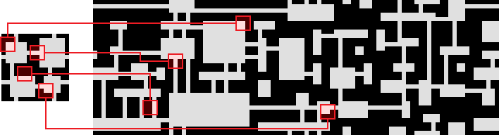
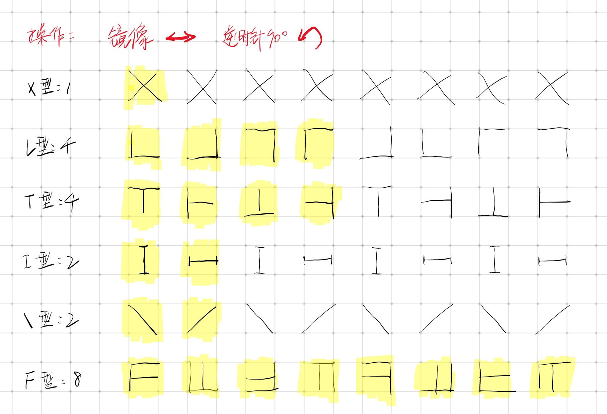

工程分析
Maxim Gumin 的 github repository
wiki
WaveFunctionCollapse
This program generates bitmaps that are locally similar to the input bitmap.
本程序用来生成与输入模板位图局部相似的位图。
Local similarity means that
- (C1) Each NxN pattern of pixels in the output should occur at least once in the input.
- (Weak C2) Distribution of NxN patterns in the input should be similar to the distribution of NxN patterns over a sufficiently large number of outputs. In other words, probability to meet a particular pattern in the output should be close to the density of such patterns in the input.
局部相似的含义是：
- (C1)输出位图中的每一个 NxN 的像素图案都至少在输入位图中出现过一次
- (Weak C2)输入位图中 NxN 的像素图案的概率分布，应该与足够数量的输出位图中 NxN 像素图案的概率分布相同（TODO: 大数定律）。换句话说，相同的图案在输出中出现的可能性接近输入位图中这个图案的比例。

WFC initializes output bitmap in a completely unobserved state, where each pixel value is in superposition of colors of the input bitmap (so if the input was black & white then the unobserved states are shown in different shades of grey). The coefficients in these superpositions are real numbers, not complex numbers, so it doesn’t do the actual quantum mechanics, but it was inspired by QM. Then the program goes into the observation-propagation cycle:
- On each observation step an NxN region is chosen among the unobserved which has the lowest Shannon entropy. This region’s state then collapses into a definite state according to its coefficients and the distribution of NxN patterns in the input.
- On each propagation step new information gained from the collapse on the previous step propagates through the output.
WFC 算法首先将输出位图全部初始化为未观测状态，每一个像素的值均为输入位图像素颜色的叠加（例如输入仅有黑白两种颜色，那么未观测状态就以不同的灰色表示（同一个位置，出现黑色和白色的可能性不同））。这些叠加态的系数是实数而非复数，因此实际上并不满足量子力学的概念，仅是收到量子力学概念的启发。接着程序进入“观测-传播”的循环：
- 每一个观测阶段，选中一个有着最低熵（Shannon entropy）的未观测的 NxN 的区域。随后，这个区域的状态会根据它的系数（one-hot 系数）以及 NxN 的图案在输入中的概率分布，collapses（TODO: collapse 的翻译）到一个确定态。
- 每一个传播阶段，从上一步 collapse 得到的信息都会通过输出进行传播（TODO: 改的像人话一点）
On each step the overall entropy decreases and in the end we have a completely observed state, the wave function has collapsed.
It may happen that during propagation all the coefficients for a certain pixel become zero. That means that the algorithm has run into a contradiction and can not continue. The problem of determining whether a certain bitmap allows other nontrivial bitmaps satisfying condition (C1) is NP-hard, so it’s impossible to create a fast solution that always finishes. In practice, however, the algorithm runs into contradictions surprisingly rarely.
每一步之后，总体熵会减小，最终得到完全地观测状态，那么波函数就完全 collapsed 了。
有可能会发生这种情况，在传播过程中，一个像素的全部系数都变成了 0，这表明算法出现了冲突，无法继续执行了。确定某个位图允许其他不同位图满足条件（C1）是一个 NP 困难的问题，因此难以完成一个足够快的解决方案确保算法可以完成。在实践中，这种冲突极少发生。
Algorithm
- Read the input bitmap and count NxN patterns.
- (optional) Augment pattern data with rotations and reflections.
- 读取输入位图，计算 NxN 的图案
- （可选）通过旋转、翻转扩充图案数据的数量
- Create an array with the dimensions of the output (called “wave” in the source). Each element of this array represents a state of an NxN region in the output. A state of an NxN region is a superposition of NxN patterns of the input with boolean coefficients (so a state of a pixel in the output is a superposition of input colors with real coefficients). False coefficient means that the corresponding pattern is forbidden, true coefficient means that the corresponding pattern is not yet forbidden.
- 创建输出尺寸相符的数组（wave），数组中每一个元素代表一个 NxN 区域在输出结果中的状态。一个 NxN 区域的一个状态是输入的所有 NxN 图案及其 bool 系数的叠加（因此，输出结果中的一个像素的状态是输入的颜色及其实数系数的叠加（TODO: 验证））。False 系数表示相应的图案被禁止，True 系数表示相应的图案到目前为止未被禁用。
- Initialize the wave in the completely unobserved state, i.e. with all the boolean coefficients being true.
- 将代表 wave 的数组初始化为完全未观测状态（全部 bool 系数值为 True）
- Repeat the following steps:
- Observation:
- Find a wave element with the minimal nonzero entropy. If there is no such elements (if all elements have zero or undefined entropy) then break the cycle (4) and go to step (5).
- Collapse this element into a definite state according to its coefficients and the distribution of NxN patterns in the input.
- Propagation: propagate information gained on the previous observation step.
- 循环：
- 观测：
- 选择一个非零最小熵的数组（波）元素。若找不到符合条件的数组元素（熵为 0 或未定义的熵），跳到第五步。
- 根据当前的 bool 系数，以及输入的 NxN 图案的分布律，将这个元素 Collapse 到确定态。
- 传播：传递上一个观测阶段得到信息
- 观测：
- By now all the wave elements are either in a completely observed state (all the coefficients except one being zero) or in the contradictory state (all the coefficients being zero). In the first case return the output. In the second case finish the work without returning anything.
- 至此，所有数组元素都处在已观测状态（系数为 one-hot 位元组合，仅容许单一位元为 1，其他位元均为 0），或处在矛盾状态（系数全为 0）。
Tilemap generation
The simplest nontrivial case of the algorithm is when NxN=1x2 (well, NxM). If we simplify it even further by storing not the probabilities of pairs of colors but the probabilities of colors themselves, we get what we call a “simple tiled model”. The propagation phase in this model is just adjacency constraint propagation. It’s convenient to initialize the simple tiled model with a list of tiles and their adjacency data (adjacency data can be viewed as a large set of very small samples) rather than a sample bitmap.
最简单的例子是取 NxN=1x2 （NxM）。如果我们通过存储颜色对的概率而非颜色本身的概率来进一步简化算法，我们就得到了”简单平铺模型（simple tiled model）”。该模型中的传播阶段只是邻接约束的传播。因此可以很方便地用一个瓦片（tile）列表和它们的邻接数据（邻接数据可以看作时一组很小的样本）来初始化简单平铺模型，而不是使用样本位图。
Lists of all the possible pairs of adjacent tiles in practical tilesets can be quite long, so I implemented a symmetry system for tiles to shorten the enumeration. In this system each tile should be assigned with its symmetry type.
完全将这些邻接情况列举出来时一项很繁琐的工作，因此我实现了一套瓦片（tile）对称系统来缩短这些枚举内容。每一个瓦片都需要标明它的对称类型。
需要解释这种对称关系是怎样的？（优化方法）
- 是与这种瓦片的连接相关的吗？
- 这五种类型可以包括全部可能性吗？

Note that the tiles have the same symmetry type as their assigned letters (or, in other words, actions of the
dihedral group D4 are isomorphic for tiles and their corresponding letters). With this system it’s enough to enumerate pairs of adjacent tiles only up to symmetry, which makes lists of adjacencies for tilesets with many symmetrical tiles (even the summer tileset, despite drawings not being symmetrical the system considers such tiles to be symmetrical) several times shorter.
瓦片的对称类型与这些字母相同（同构的），有了这套系统就可以根据对称性列举出邻接瓦片，使得列出的许多对称的瓦片的邻接列表可以成倍缩短。
Note that the unrestrained knot tileset (with all 5 tiles being allowed) is not interesting for WFC, because you can’t run into a situation where you can’t place a tile. We call tilesets with this property “easy”. Without special heuristics easy tilesets don’t produce interesting global arrangements, because correlations of tiles in easy tilesets quickly fall off with a distance. Many easy tilesets can be found on cr31’s site. Consider the “Dual” 2-edge tileset there. How can it generate knots (without t-junctions, not easy) while being easy? The answer is, it can only generate a narrow class of knots, it can’t produce an arbitrary knot.
knot（绳结）图集对 WFC 算法来说并无必要，因为不可能遇到无法放置图集中瓦片的情况。我们称具有这种情况的图集属性为“easy”。cr311’s site 可以找到这种图集。
Note also that Circuit, Summer and Rooms tilesets are non-Wang. That is, their adjacency data cannot be induced from edge coloring. For example, in Circuit two Corners cannot be adjacent, yet they can be connected with a Connection tile, and diagonal tracks cannot change direction.
拆轮子
工程结构
1 | Wave-function-collapse-sharp |
- “[][]”和“[,]”：锯齿数组和二维数组的区别
- “(int, int)[]”：元组类型（c# 7.0，之前版本使用泛型 Tuple）数组，组合不同类型的对象（返回多个值），使用 Item1 等访问，也可以声明成员
- 熵的计算：
- $\log w{sum} - \frac{\sum{i-1}^n wi\times\log w_i}{w{sum}}$
- $\sum_{i-1}^n w_i\times\log w_i$
- 定义：
随机变量$X$的熵值$Eta$定义如下，其值域为${x_1, \dots, x_n}$：
其中，$P$为$X$的概率质量函数（probability mass function），$E$为期望函数，而I(X)是X的信息量（又称为自信息）。I(X)本身是个随机变数。
当取自有限的样本时，熵的公式可以表示为：